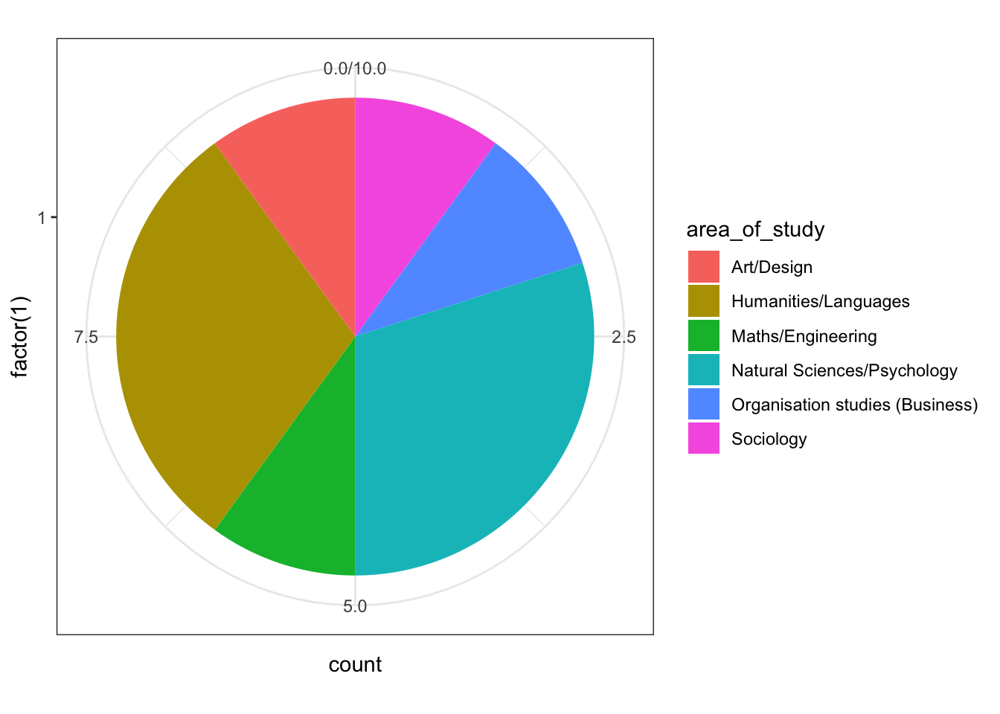

Introduction to R
“Thinking like a Computer”

Introduction
This is the most basic introduction to R that has ever been comrpised. Lots of this is shamelessly lifted from Lisa DeBruine and Dale Barr’s work designing the data skills course for RMPS students. Find lots and lots of useful resources here: https://gupsych.github.io/data_skills/01_intro.html
Please take a look at these resources in your own time!
Setup
First things first, we have to set our Working Directory to the place our file is. In RStudio we do this by hitting ‘Session > Set Working Directory > Source File Location’. This lets us interact with other files that are outside of our current script (and keeps our project nice and tidy).
In RStudio in Rmd (spoken: “R Markdown”) files, you can run either one section of code by hitting ‘Run > Run current chunk’ or you can run every section of code by hitting ‘Run > Run all’.
A Chunk of code is defined as everything within the three ` marks, like this
```{r}
# The ``` means 'format this section in a certain way'
# the {r} means 'interpret this section as R code, not as plain text'
# the second ``` means the section is over
# Because we're in an Rmd file and we're in an {r} chunk, all writing is going to
# go in comments. Any line that starts with a # is a comment.
# In RStudio, these are conveniently green-ed out
```You’ll learn much more about formatting Rmd files,
First we load in libraries (also known as packages). These are things that we’ve either already installed, or come installed in R or RStudio. Functionally, this is just creating an environment with a bunch of code that someone else has written for us.
Using the Console, Variables, and Data Types
Console and Variables
RStudio generally has four panels: Current file, Console, Environment, and Viewer. You can think of the console as a place to try things out, and the file to write down ideas you want to stick around. Go to the console and type
Notice how now the environment shows we have a Value x that is 6. Congrats, we just created our first variable! In the above, we would say “the variable x is assigned to 1 + 5” or “x gets 1 + 5”
We can do this within the script by simply having a chunk like so:
And running the chunk. Notice we now have y up there hanging out with x too.
Data Types
Both x and y in this case are numbers. We can see this by typing
## [1] "double"in the console. It will print “double” which, for all intents and purposes, is a regular old number.
We can create variables of any type
Notice that the first two variables here are really a collection of other variables – first_string is a vector of characters, and first_vector is a vector of numerics. Because of this property, we can index into them:
This creates a new variable with the value of the second item in first_vector.
Functions
We can also take advantage of everything we loaded into the library by using functions.
For instance, since we loaded in the cowsay library, we can write
## Colors cannot be applied in this environment :( Try using a terminal or RStudio.##
## --------------
## This is using a function!
## --------------
## \
## \
## \
## |\___/|
## ==) ^Y^ (==
## \ ^ /
## )=*=(
## / \
## | |
## /| | | |\
## \| | |_|/\
## jgs //_// ___/
## \_)
## When we run this line we see it produce output. This is because we called the function say Calling a function is as easy as that! Here’s the basic anatomy of a function call:
function_name(argument1, argument2, ...)where the arguments are the parameters of the function – the things the function needs to do its thing.
Loading Data
We can also interact with files outside of our R script, like loading data. Download the results of our small survey for Hack Your Data Beautiful here.
Now when we click on survey_data in our environment section, we can see all the beautiful data we’ve imported!
We can manipulate our data in a variety of ways. For example, the column names are pretty ugly right now. Let’s make them something we can work with.
# change column names
new_colnames <- c("timestamp", "area_of_study", "elaboration",
"coding_experience", "nervousness", "confidence",
"workshop_goals", "comments")
colnames(survey_data) <- new_colnamesBoom.
From this we can do all sorts of analysis on our data
# get values and count from values
pie<- ggplot(survey_data, aes(x=factor(1), fill=area_of_study)) +
geom_bar(width = 1) +
coord_polar("y")
pie